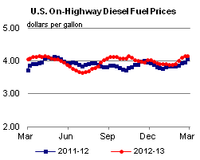

Released: February 27, 2013
Next Release: March 6, 2013
Decline in non-highway uses drives down distillate fuel consumption in 2012
Domestic use of distillate fuels fell in 2012 despite steady demand from on-highway transportation, by far the largest user. The decline in domestic consumption of 156,000 barrels per day (bbl/d), or 4.0 percent, compared with 2011 broke a trend that saw distillate use rise by 4.7 percent in 2010 and 2.6 percent in 2011 as the economy recovered (Figure 1).
Lower distillate consumption reflects a combination of factors, including lower demand for heating oil and a decrease in rail traffic. The drop in domestic consumption during 2012 was offset by increased demand for U.S. distillate exports, which rose 154,000 bbl/d (18 percent) compared to 2011.
{kind=link}
The U.S. Energy Information Administration (EIA) estimates that on-highway transportation accounts for about 60 percent of the distillate fuel consumed in the United States. Based on excise tax receipt data from the Federal Highway Administration (FHWA), diesel fuel consumption for on-highway transportation was virtually unchanged in 2012 compared with 2011. The FHWA reported that total sales of diesel and alternative fuels averaged 2.4 million bbl/d from January through October, a 0.2 percent increase over the same period in 2011.
Consumption of distillate fuels with high sulfur content [>500 parts per million (ppm)], used almost exclusively for heating oil, was down 98,000 bbl/d (25 percent) nationwide in 2012 according to preliminary data. Petroleum Administration for Defense District 1 (PADD 1), which includes the Northeast, the nation's largest heating oil market, had the largest regional decline in consumption of high-sulfur fuels (more than 60,000 bbl/d). The decrease in distillate consumption for heating use in PADD 1 was driven by mild weather during first-quarter 2012. The New England and Middle Atlantic census divisions, which make up the Northeast, saw 21 percent fewer heating degree days during first-quarter 2012 compared to the same quarter in 2011. Moreover, distillate consumption for home heating declined over the last decade as consumers switched to less-costly heating options, where available. Consumption of high-sulfur fuels declined in other regions, as well. PADD 5 (West Coast) consumption was down 15,500 bbl/d from 2011, PADD 3 (Gulf Coast) dropped 11,000 bbl/d, and PADD 2 (Midwest) fell 10,000 bbl/d (Figure 2).
{kind=link}
A decline in railroad consumption of diesel also contributed to lower overall distillate demand in 2012. According to the Association of American Railroads, the railroad sector saw a 3.1-percent decrease in carloads during 2012, due mostly to lower coal traffic. The rail sector accounted for about 5 percent of total distillate consumption in 2011, and a 3.1-percent drop could equate to more than a 6,000-bbl/d decrease.
Consumption of distillate fuel by the electric power industry, which accounted for only about 1 percent of total distillate demand in 2011, fell by 19 percent in 2012 as natural gas-fired generation continued to surge. Although the electric power sector is not a large consumer of petroleum liquids, this 19-percent reduction represents over 6,000 bbl/d of reduced demand for distillate.
The remaining drop in distillate consumption in 2012 of about 45,000 bbl/d was likely due to a wide-ranging combination of factors, including drought, Hurricane Sandy, and increased industrial efficiency across sectors.
Gasoline and diesel fuel prices up again
The U.S. average retail price of regular gasoline increased four cents to $3.78 per gallon, up six cents from last year at this time. The largest increase over last week came on the Gulf Coast, where the price rose nine cents to $3.62 per gallon. The West Coast is above the $4 per gallon mark for the first time since October 2012 at $4.05 per gallon, an increase of eight cents from last week, but seven cents lower than the price last year at this time. The Rocky Mountain price is up six cents to $3.47 per gallon. On the East Coast, the price increased five cents to $3.80 per gallon. Going against the trend, the Midwest price decreased three cents to $3.74 per gallon.
The national average diesel fuel price increased less than a penny to remain at $4.16 per gallon, 11 cents higher than last year at this time. The East Coast price was up less than a penny, while the West Coast price decreased less than a penny to remain at $4.20 per gallon and $4.30 per gallon, respectively. The West Coast price is now three cents lower than last year at this time. The Midwest price is $4.12 per gallon, one cent lower than last week. The Gulf Coast price increased two cents to $4.09 per gallon, while the Rocky Mountain price rose three cents to $4.06 per gallon.
Propane inventories decline
Total U.S. propane stocks fell 3.2 million barrels to end at 47.9 million barrels last week, yet are 4.0 million barrels (9.0 percent) higher than the same period a year ago. On a regional basis, Gulf Coast inventories dropped by 1.6 million barrels, Midwest regional inventories declined by 0.9 million barrels, East Coast stocks dipped by 0.6 million barrels, and stocks in the Rocky Mountain/West Coast region fell by 0.1 million barrels. Propylene non-fuel-use inventories represented 6.2 percent of total propane inventories.
Residential heating fuel prices decreased
Residential heating oil prices decreased during the week ending February 25, 2013. The average residential heating oil price decreased by 2 cents to $4.13 per gallon, but was 2 cents per gallon higher than the February 27, 2012 price. Wholesale heating oil prices decreased by 9 cents to $3.28 per gallon, 11 cents per gallon lower than last year at this time.
The average residential propane price was $2.49 per gallon, essentially unchanged from last week but 37 cents per gallon lower than the same period last year. Wholesale propane prices rose by 1 cent to $0.99 per gallon, 25 cents per gallon lower than last year at this time.
Text from the previous editions of This Week In Petroleum is accessible through a link at the top right-hand corner of this page.
|  | |||||||
| Retail Data | Change From Last | Retail Data | Change From Last | ||||
| 02/25/13 | Week | Year | 02/25/13 | Week | Year | ||
| Gasoline | 3.784 | Heating Oil | 4.131 | ||||
| Diesel Fuel | 4.159 | Propane | 2.493 | ||||
|
 |
||||||||||||||||||||||||||
| *Note: Crude Oil Price in Dollars per Barrel. | |||||||||||||||||||||||||||
| Stocks Data | Change From Last | Stocks Data | Change From Last | ||||
| 02/22/13 | Week | Year | 02/22/13 | Week | Year | ||
| Crude Oil | 377.5 | Distillate | 124.2 | ||||
| Gasoline | 228.5 | Propane | 47.854 | ||||